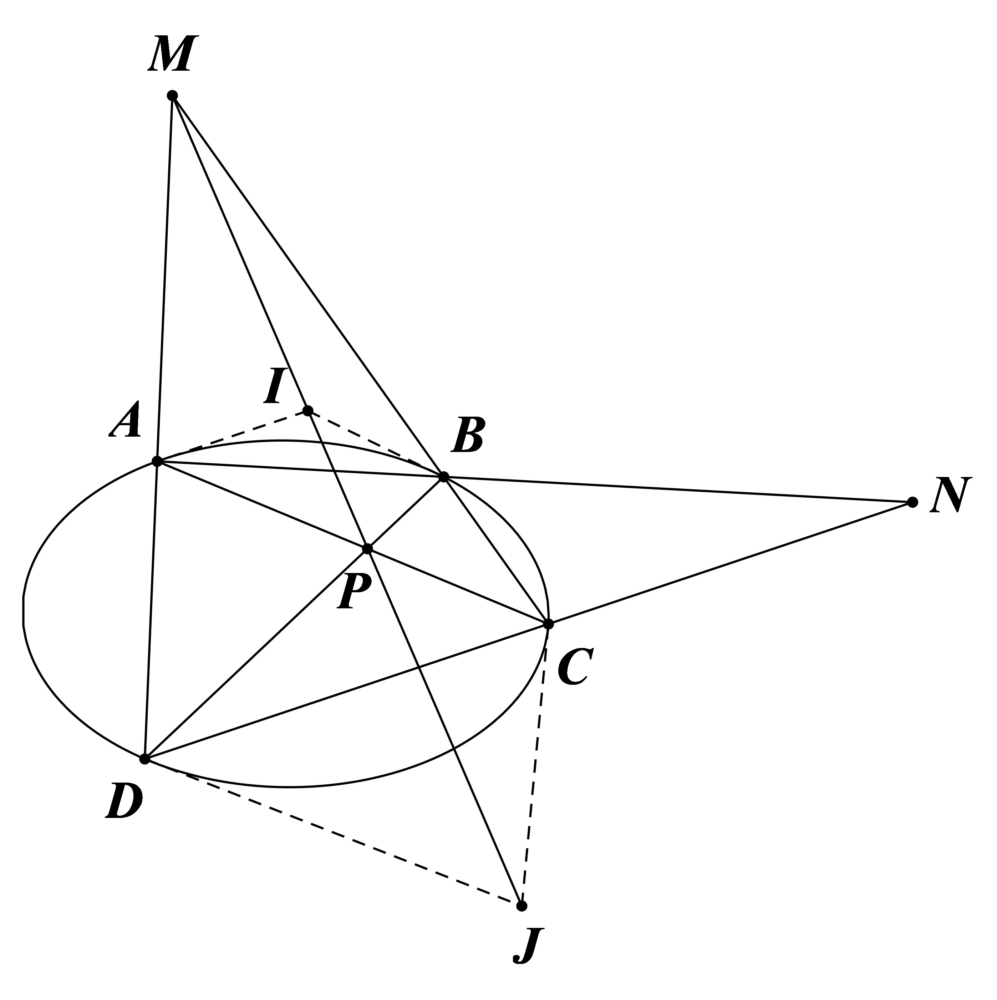

自极三角形
看上去十分简单。
 warning
warning
需要 极点极线方程 的相关知识。
的相关知识。
定义 #
圆锥曲线任意内接四边形 $ABCD$，其边交点 $M,N$ 和对角线交点 $P$ 构成自极三角形。
- $MN$ 是 $P$ 的极线
- $MP$ 是 $N$ 的极线
- $NP$ 是 $M$ 的极线
 |
|---|
证明 #
引理 #
Ceva 定理 #
$\Delta ABC$ 中，$AD,BE,CF$ 共点 $O$。
| $\frac{BD}{DC}\cdot\frac{CE}{EA}\cdot\frac{AF}{FB}=1$ |
证明：
$$\frac{BD}{DC}=\frac{S_{\Delta AOB}}{S_{\Delta AOC}}, \frac{CE}{CA}=\frac{S_{\Delta BOC}}{S_{\Delta AOB}}, \frac{AF}{FB}=\frac{S_{\Delta AOC}}{S_{\Delta BOC}}$$
代入即得
$$\frac{BD}{DC}\cdot\frac{CE}{EA}\cdot\frac{AF}{FB}=1$$
Ceva 定理还有角元形式
$$\frac{\sin\angle BAD}{\sin\angle CAD}\cdot\frac{\sin\angle CBE}{\sin\angle ABE}\cdot\frac{\sin\angle ACF}{\sin\angle BCF}=1$$
证明过程与边元形式大致相同。
证明过程都是充要的，故 Ceva 定理可逆用。
Pascal 定理 #
二次曲线任意内接六边形的所有对边交点共线。
| $P,Q,R$ 共线 |
证明：
由射影几何知识得，只需要讨论圆，其余二次曲线可由圆推广。
$P,Q,R$ 共线 $\eq PQ,BC,EF$ 共点。
在 $\Delta ADQ$ 中，由 Ceva 定理 得
$$\frac{\sin\angle 1}{\sin\angle 2}\cdot\frac{\sin\angle 3}{\sin\angle 4}\cdot\frac{\sin\angle 5}{\sin\angle 6}=1$$
由圆周角定理得
$$\angle n=\angle n’\quad(n=1,2,3,4,5,6)$$
故在 $\Delta CFQ$ 中有
$$\frac{\sin\angle 1’}{\sin\angle 2’}\cdot\frac{\sin\angle 3’}{\sin\angle 4’}\cdot\frac{\sin\angle 5’}{\sin\angle 6’}=1$$
由 Ceva 定理 逆定理得 $PQ,BC,EF$ 共点。即证。
证明 #
移动 Pascal 定理 中六个顶点的位置。
当 $B,C$ 和 $E,F$ 重合时，直线 $BC,EF$ 为椭圆的切线。同理，再将 $B,A$ 和 $E,D$ 移动至重合。
结合前两图得：椭圆任意内接四边形（如图）有
$$M,I,P,J \ \text{共线}$$
其中 $I$ 为 $AB$ 极点，$J$ 为 $CD$ 极点。由 极点极线方程 知识得
$$AB:\frac{x_Ix}{a^2}+\frac{y_Iy}{b^2}=1$$
$$CD:\frac{x_Jx}{a^2}+\frac{y_Jy}{b^2}=1$$
由 $AB,CD$ 交于 $N$，将 $N$ 点坐标代入得
$$\begin{cases} \disp\frac{x_Ix_N}{a^2}+\frac{y_Iy_N}{b^2}=1\\ \disp\frac{x_Jx_N}{a^2}+\frac{y_Jy_N}{b^2}=1 \end{cases}$$
故 $I,J$ 为方程 $\frac{x_Nx}{a^2}+\frac{y_Ny}{b^2}=1$ 的两解，即 $N$ 的极线过 $I,J$。故 $MP$ 为 $N$ 的极线。
同理得 $MN$ 为 $P$ 的极线，$NP$ 为 $M$ 的极线。
证毕。
|  |
|---|
|
|---|
使用例 #
例 1 #
$P(p,0)$ 为定点，$E$ 的运动轨迹为 $P$ 的极线。
$$\frac{px}{a^2}+\frac{0}{b^2}=1\intro x=\frac{a^2}{p}$$
 |
|---|
例 2 #
$P(m,n)$ 为定点，$E$ 的运动轨迹为 $P$ 的极线。
$$\frac{mx}{a^2}+\frac{ny}{b^2}=1$$
例 3 #
$Q$ 的运动轨迹为 $P$ 的极线。
设 $P(0,p)$，则 $Q$ 的轨迹方程为
$$\frac{0}{a^2}+\frac{py}{b^2}=1\intro y=\frac{b^2}{p}$$
故
$$\vec{OP}\cdot\vec{OQ}=(0,p)\cdot(x_Q,\frac{b^2}{p})=b^2$$